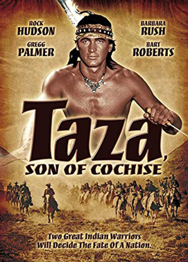
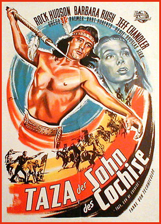
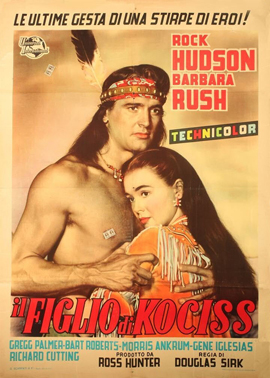

Taza, Son of Cochise
Ian MacDonald
Lance Fuller
Charles Horvath
Dan White
SYNOPSIS
Three years after the end of the Apache Wars, peacemaking chief Cochise dies. His elder son Taza (Rock Hudson) shares his ideas, but brother Naiche (Bart Roberts) yearns for war ... and for Taza's betrothed, Oona (Barbara Rush).
Naiche loses no time in starting trouble which, thanks to a bigoted cavalry officer, ends with the proud Chiricahua Apaches being moved to a reservation, where they are soon joined by the captured renegade Geronimo, which is all it takes to start a war.
It was the third time Jeff Chandler played Cochise (albeit uncredited this time) following Broken Arrow and The Battle at Apache Pass.
Parts of the film were shot in Castle Valley, Professor Valley, Sand Flats, Devil's Garden and Arches National Park in Utah.
Although famed Apache war chief Cochise did indeed have a son named Taza, this biopic is a highly fictionalized account of his life. For example, Taza had a son named Nino Cochise (born Ciyo Cochise, who later in his life became an actor and had parts in several early westerns). This film doesn't even mention him.
Universal joined the parade of film studios that wanted to cash in on the popularity of Indian chiefs during the 1950s. This western followed the familiar formula of war and peace, reservation vs. warpath story lines, trigger-happy soldiers and renegade Indians. The movie has enough action and scenic vistas to maintain interest but also looks like it was filmed on a shoestring budget. Hudson and Barbara Rush make a fetching couple and the supporting cast is good but the film lacks the polish of other Universal westerns of this period.
It has a thoughtful script, and director Douglas Sirk claimed it was his favourite of his movies; he had always wanted to make a western. There are some issues with the movie (not least the terrible "whitewashing" of Hollywood actors being spray-tanned to portray native Americans) and by Rock Hudson's rather wooden acting. He's got two settings: thoughtful or angry, and that performance makes him, as the central character, seem rather stupid, especially given the more nuanced performances afforded the men playing cavalrymen.


